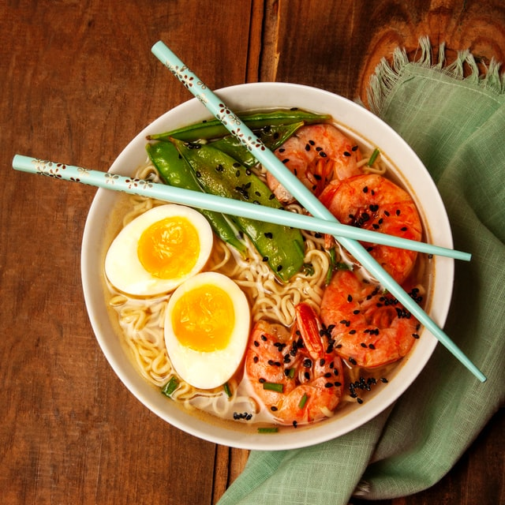

Shrimp Ramen Recipe

Ready for a quick and easy ramen recipe? This shrimp ramen soup is definitely one of those quick and easy meals and it's definitely a kid's favorite! It's loaded with shrimp, vegetables, and the broth is packed with flavor. It's the perfect bowl of soup for a chily day or for a quick lunch or dinner. Let's get started!
Servings: 4
Calories: 219 kcal
Ingredients
- 1-2 TBSP olive oil
- 8 oz sliced mushrooms
- 1 large carrot, grated
- 4 cloves garlic, minced
- 4 cups low sodium broth/stock of choice
- 1 TBSP freshly grated ginger
- 1 TSP low sodium soy sauce
- 1 TSP sesame oil
- 2 packages ramen noodles (discard seasoning packet)
- 1 lb medium/large raw shrimp (thawed, cleaned, and peeled)
- Chopped green onions and cilantro for garnish (optional)
Instructions
- In a large pot, saute mushrooms and carrot in olive oil for 5 minutes or until they start to soften.
- Add garlic and cook, stirring for 30 seconds.
- Add broth, ginger, soy sauce, and sesame oil.
- Cover and bring to a boil.
- Once boiling, add noodles and shrimp.
- Cover and boil for 3 minutes. Serve topped with chopped green onions and cilantro if desired.
- Enjoy!
Back to Main Recipes Page